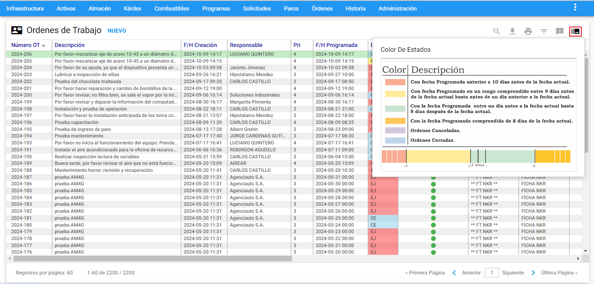
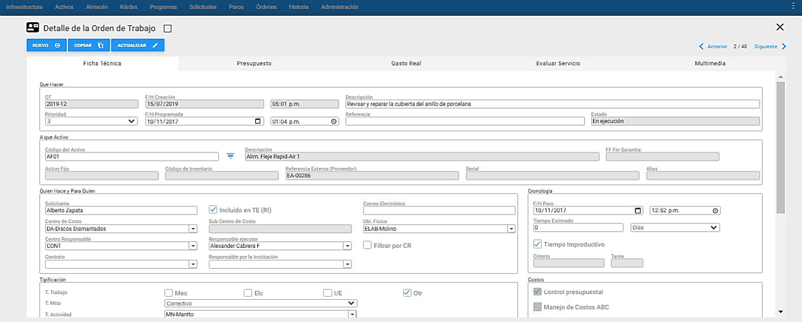
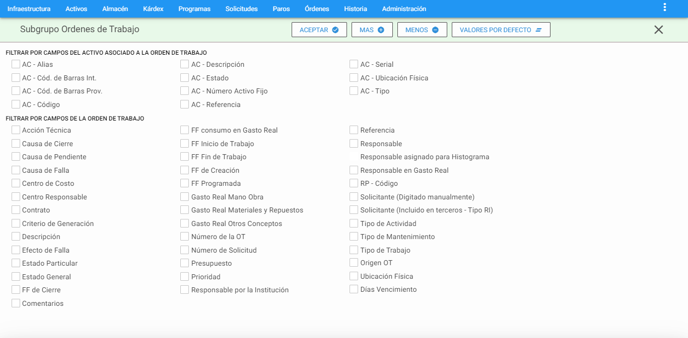
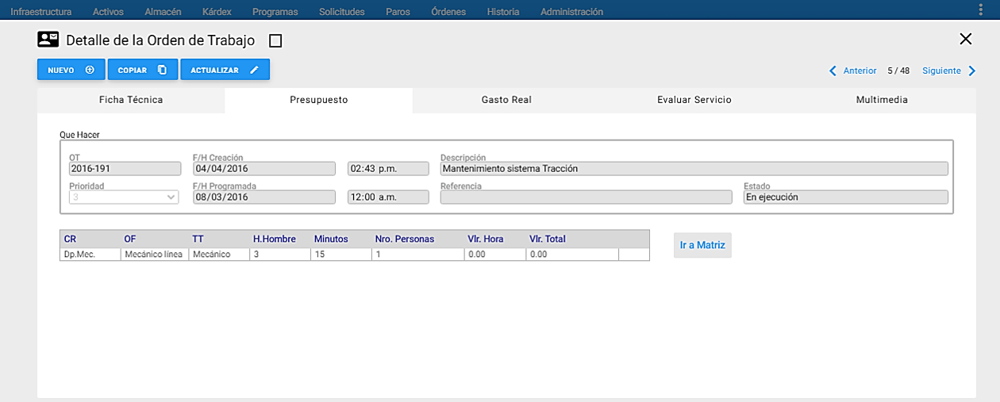
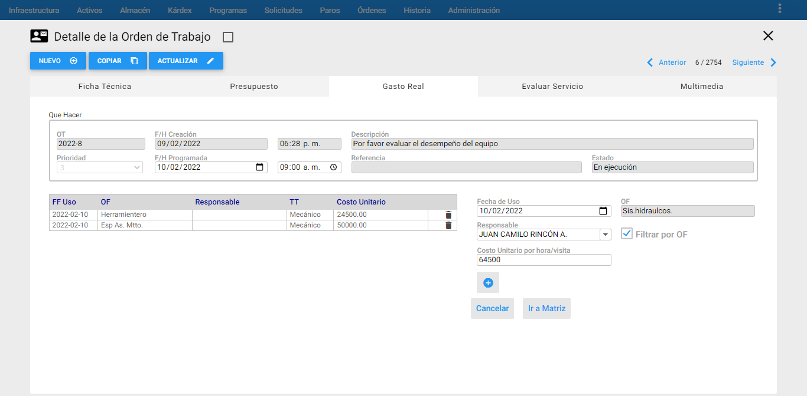
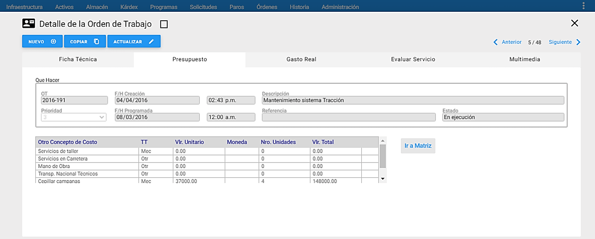
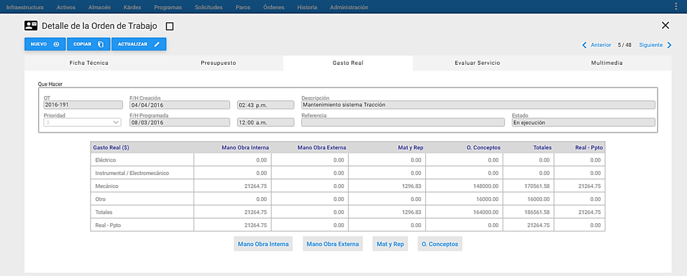

Solicitudes de Servicio
- ¿Qué son las Solicitudes de Servicio?
- ¿cuál es su objetivo?
- ¿Cómo se define?
- ¿cómo trabaja una Solicitud de Servicio?
- ¿Cuál es su proceso?
- ¿quienes los protagonistas?
- ¿como se le hace seguimiento?.
Son las preguntas básicas que obtienen respuesta en el presente capitulo.
Conceptos Básicos sobre Solicitudes de Servicio
Solicitud de Servicio (SS)
El AM propone la facilidad llamada Solicitudes de Servicio con dos objetivos:
Primero, que un número amplio de personas, autorizadas, dentro de una Organización, soliciten la prestación de un servicio al área encargada, normalmente Mantenimiento, y segundo, que el personal de mantenimiento pueda registrar de una forma rápida, aquellos trabajos sencillos que realiza; sencillez expresada en términos de bajo costo, corto tiempo y un solo recurso requerido para su ejecución. Para uno y otro caso, se trata de un mecanismo fácil y simple que permite, además de generar la SS, hacerle seguimiento hasta su cierre definitivo.
El trámite de una SS consta de varios pasos, entre ellos una inspección previa, y por ello no es éste el mecanismo más adecuado para solicitar servicios urgentes. Se parte de la base además, de que el servicio solicitado puede o no prestarse. La decisión de ejecutar o no la SS, o de ejecutarla como SS, o como OT, depende de factores como: Razonabilidad de la Solicitud, Viabilidad de la Solución, Disponibilidad de presupuesto autorizado, tiempo, costo y recursos presupuestados.
A manera de recomendación, para el área de Servicios encargada de recibir y decidir sobre las Solicitudes, se debe tener en cuenta que el volumen de las Solicitudes puede llegar a ser muy alto, principalmente al inicio del ofrecimiento del servicio al gran público de la Organización. Ello debe generar un ejercicio de planeación sobre los recursos requeridos tanto para la recepción de las Solicitudes como para su atención. La planeación debería incluir una buena definición de procesos y de procedimientos, que garanticen la agilidad de los tres aspectos: recepción, decisión y ejecución. No prestar suficiente atención a alguno de ellos puede redundar en insatisfacción de los clientes del servicio.
Creación de Solicitudes de Servicio
Crear una Solicitud de Servicio exige en primera instancia, que el usuario tenga la autorización en el sistema para poder hacerlo. Son potenciales generadores de Solicitudes de Servicio: los usuarios de los servicios de mantenimiento a todo lo ancho de la Organización, el personal de producción, el personal de servicios, el personal administrativo y el personal de mantenimiento.
La creación de una SS se realiza a través de la Ventana Detalle, en la ventana principal de Solicitudes de Servicio. En cuanto se da un clic sobre el botón Nuevo esta ventana adopta la forma que se muestra a continuación. Al crear una SS, ella asume automáticamente el estado inicial: ** “En Análisis”.** A partir del momento en que se ** “Inserta”** la SS, el solicitante no puede modificar ningún campo, pero si puede hacer seguimiento permanente sobre ella.

Seguimiento y Cierre de Solicitudes de Servicio
El paso siguiente es ejecutado por la persona encargada de Administrar las Solicitudes de Servicio por parte de Mantenimiento. Consiste en la asignación de un recurso interno como responsable de la SS. Tal responsable es notificado y se encarga, a partir del momento, de la SS, iniciando con una visita e inspección previa, al objeto que requiere de su servicio. En el momento de asignar el Responsable, se registra la fecha y hora, y se cambia el estado de la Solicitud a ** “Asignada”**.
El Inspector visita al solicitante, se entera y profundiza sobre su solicitud y determina sí ejecutar o no ejecutar la SS. Para ello, en este momento, el Responsable estudia la razonabilidad de la solicitud, la factibilidad de su solución y la disponibilidad de presupuesto. Pero también el Responsable estima la cantidad de los recursos requeridos, su costo y el tiempo requerido en términos de horas-hombre. De esta decisión depende el tercer paso: el cierre de la SS. El Responsable decide entonces una de las tres alternativas siguientes:
1. Se decide no ejecutar la Solicitud de Servicio. En este caso, el Responsable cambia el estado a ** “Cerrada no ejecutada”**. Se actualizan y registran los campos referentes a este Estado, se escribe en el campo Diagnóstico/Comentarios la razón por la que se toma la decisión de no ejecutar y se cierra la solicitud haciendo un clic en el botón Actualizar
2. Se decide ejecutar, como Solicitud de Servicio. Este es el caso en que los costos o estimados se encuentran por debajo de los parámetros predefinidos por la Organización: El costo de ejecución, el tiempo de ejecución y el número de horas hombre son relativamente bajos. Se ejecuta la Solicitud y a continuación se cambia el estado a ** “Cerrada Ejecutada”**, se actualizan y registran los campos referentes a este Estado. El Responsable cierra la Solicitud como ejecutada, haciendo clic en el botón Actualizar .
3. Se decide ejecutar la Solicitud como Orden de Trabajo. En este caso, al analizar los parámetros predefinidos (Costo de ejecución, tiempo de ejecución, número de horas hombre), se establece que es un trabajo apreciable, que exige mayor control para seguimiento posterior y por ello se debe generar una Orden de Trabajo desde la Solicitud de Servicio. Se ejecuta entonces la Solicitud y a continuación se cambia el estado a ** “Cerrada con OT”. Se actualizan y registran los campos referentes a este Estado y se cierra con un clic en el botón Actualizar . Acto seguido el sistema crea una Orden de Trabajo, cuyo número se indica en el campo ** “OT Generada”. Esta nueva Orden de Trabajo, contiene toda la información que se había registrado previamente en la Solicitud de Servicio, lo que significa que no hay que reingresarla. Existe la posibilidad de hacer acceso directo desde la Solicitud, a la Orden de Trabajo, dando un clic en el hipervínculo en que se constituye el número de la Orden. De igual forma, estando en la ventana Detalle de la Orden de Trabajo, es posible regresar directamente a la SS, dando un clic sobre el hipervínculo que se ha creado al lado del campo ** “Esta OT fue generada desde la SS”**.
Ventana Principal de Solicitudes de Servicio

A esta ventana se llega haciendo clic sobre la opción Solicitudes del Menú Principal. A través de ella se ejecutan todas las funciones dedicadas a administrar las Solicitudes de Servicio. A continuación se ilustran las porciones que la componen.
Ventana Visor

Desde esta ventana es posible observar las Solicitudes de Servicio existentes. Se listan todas o una selección o subgrupo de ellas. El conjunto de Solicitudes de Servicio disponible a ser desplegado se muestra a través de páginas. El tamaño de las páginas es configurable desde la opción Administración del menú principal, en la sección ** “Valores por Defecto”** por parte de un usuario autorizado.
Al hacer clic sobre alguna de las Solicitudes de Servicio del Visor, el sistema responde mostrando la información de esa Solicitud de Servicio, en forma detallada, en la parte inferior o Ventana Detalle.
Los nombres que encabezan las columnas a manera de títulos en azul, permiten ordenar de manera ascendente la información por cada ítem seleccionado, al dar clic en el respectivo encabezado.
En la ventana Visor por la columna Estado, se define una semaforización de las Solicitudes de Servicio. La finalidad de esta columna es mostrar de manera gráfica el estado de la Solicitud de Servicio. En la parte inferior de la ventana Visor, desplazando el scroll vertical, se encuentra una tabla donde se define el significado de cada color que se presenta en dicha columna.

Ventana Detalle

En la gráfica anterior, que muestra la ventana Detalle de Solicitudes de Servicio, se aprecian todos sus componentes y sus respectivos contenidos. En esta ventana Detalle de Solicitudes de Servicio se encuentra toda la información relevante a la Solicitud de Servicio seleccionada en el Visor.
A continuación se describen los campos que componen el registro. Sobre cada campo se da una breve explicación.
Solicitud: En este campo el sistema registra en forma automática el número de la Solicitud, sobre una base de consecutivo cronológico. El número de la SS solo es asignado al concluir su proceso de Creación.
F/H generación: En este campo se registra la fecha y la hora en la que se registró la Solicitud por parte del solicitante. Por defecto se sugiere la fecha del sistema.
Prioridad: Es el campo descolgable en el que se define la prioridad de la Solicitud. Es asignada por el usuario solicitante. En el momento de crear la SS, el sistema por defecto asume el valor “Media”. Las opciones disponibles son:
-
Alta
-
Media
-
Baja
Estado: Es el campo descolgable desde donde se eligen las opciones que permiten hacer seguimiento al estado de la solicitud. Las opciones disponibles son:
-
En Análisis (AN)
-
Asignada (AS)
-
Cerrada No Ejecutada (NE)
-
Cerrada Ejecutada (CE)
-
Cerrada con OT (CO)
Al modificar este campo hacia el estado ** “Asignada”**, el software registra automáticamente en el campo F/H asignación, la fecha y hora en que se asigna la Solicitud de Servicio y obliga a que se elija en el campo Responsable, el responsable asignado a la Solicitud de Servicio.
Diagnóstico del Usuario: Es un campo de texto en el que se explica brevemente la situación o problema del Objeto de Mantenimiento, que obliga a diligenciar la Solicitud de Servicio. El tamaño de este campo es de 400 caracteres.
Solicitante: En este campo se define el nombre del Solicitante de la Solicitud de Servicio. El solicitante puede registrar su nombre en el espacio correspondiente. Sin embargo es posible también seleccionar su nombre de la lista que se habilita como desplegable al marcar la opción ** “Incluido en Terceros”. Se debe tener en cuenta que de la tabla de Terceros solo se despliegan los Terceros de Tipo RI. La funcionalidad de poder definir que el Solicitante sea el usuario logueado y no se pueda modificar, se parametriza en Administración, Valores por Defecto, la etiqueta SOLICITUDES, la opción ** “El solicitante es tomado del usuario logueado y no se puede modificar”.
E-Mail: En este campo se define el correo electrónico del Solicitante de la Solicitud de Servicio, cuando el solicitante es digitado manualmente. Si el solicitante se selecciona con la opción ** “Incluido en Terceros”** y allí se tiene definido el correo electrónico, automáticamente se carga a este campo el e-mail definido en el módulo de Terceros. La funcionalidad del envío de correos electrónicos se parametriza Administración, Valores por Defecto, la etiqueta GENERAL, la opción** “Enviar e-mail al solicitante”**.
F/H Sugerida de entrega: En este campo se selecciona la fecha y hora en la que el solicitante considera que el Servicio Solicitado puede ser oportuno.
Equipo: En esta línea se pretende identificar claramente el Equipo o el Objeto de Mantenimiento para el cual se está solicitando el servicio.
La línea está conformada por tres campos :
El primero es una caja de selección que se marca cuando la Solicitud tiene un objeto de mantenimiento identificable. Eso quiere decir que el solicitante puede identificar el Objeto de Mantenimiento a través de alguno de los valores-clave que son seleccionables en el segundo campo.
El segundo campo se encuentra a la derecha del primero y permite identificar la clave de búsqueda del Equipo Objeto del mantenimiento. Las claves de búsqueda disponibles son:
- Por Código
- Por Serial
- Por Referencia
- Por Activo fijo
- Por Alias
- Por Cód. Barras Int
- Por Cód. Barras Prov
Una vez se ha determinado cual es la clave que se va a utilizar para buscar el Equipo, se procede a registrar el valor respectivo para esa clave en el tercer campo. Hay dos maneras de hacerlo.
La primera consiste en teclear el valor correspondiente a la clave del Equipo, seguido de la tecla ** “TAB”**. Como resultado, se muestran la descripción, el Centro de Costo y la Ubicación Física del Equipo seleccionado.
La segunda consiste en que se busca el equipo u Objeto de la Solicitud, a través del visor de Equipos. Para ello se da un clic sobre el botón de Visor de Equipos (Binóculos sobre papel amarillo). Acto seguido se muestra la ventana de visor de Equipos junto con la de subgrupo para poder ubicarlo. Una vez se encuentra el Equipo en la Tabla de visor de Equipos, se selecciona dando un clic sobre cualquiera de sus campos. A continuación se da un clic sobre botón Aceptar de esa ventana o se hace doble clic sobre el registro seleccionado. Inmediatamente ese código es trasladado hasta el tercer campo de la línea Equipo en la ventana de Solicitudes de Servicio, junto con sus datos complementarios.
Cuando el Equipo o el Activo, Objeto de la Solicitud de Servicio no pueden ser identificados a través de las claves disponibles, posiblemente porque no está registrado en la tabla de Equipos del Sistema, se desmarca el primer campo de la línea de Equipo posibilitando identificar el Equipo en lenguaje natural.
Nota: Al momento de Cerrar una Solicitud de Servicio que se creó con un Equipo no existente, identificándolo en lenguaje natural, el sistema requerirá un Equipo válido. Se hace necesario entonces que el Responsable de la Solicitud o Inspector que la atendió, ubique en ese campo el Equipo correcto. De no existir, deberá ser creado en la tabla de Equipos.
Código: En este campo se visualiza la información del código del Equipo seleccionado.
Referencia: En este campo se visualiza la información de la referencia del Equipo que se haya establecido en la ficha técnica de este mismo.
Alias: En este campo se visualiza la información del Alias del Equipo que se haya establecido en la ficha técnica de este mismo.
Serial: En este campo se visualiza la información del Serial del Equipo que se haya establecido en la ficha técnica de este mismo.
Núm. Activo F.: En este campo se visualiza la información del Número de Activo Fijo del Equipo que se haya establecido en la ficha técnica de este mismo.
Marca: En este campo se visualiza la información de la Marca del Equipo que se haya establecido en la ficha técnica de este mismo.
Modelo: En este campo se visualiza la información del Modelo del Equipo que se haya establecido en la ficha técnica de este mismo.
C. Costo /Cliente: Este campo permite seleccionar el Centro de Costo o Cliente que es responsable del Objeto de Mantenimiento. Cuando se define un Equipo u Objeto de Mantenimiento válido, el sistema trae automáticamente a este campo el Centro de Costo asociado. A la derecha del código del Centro de Costo, se habilita un Link que permite visualizar y actualizar toda la información del Centro de Costo.
Al dar clic al Link ** “Info del C.C.”**, se abre una ventana mostrando la información del Centro de Costo, allí se tiene la opción de crear y modificar información de un centro de costo.
Ubicación Física: Este campo permite seleccionar la Ubicación Física en la que se encuentra el Objeto de Mantenimiento para el que se genera la Solicitud de Servicio. Cuando se define un Equipo u Objeto de Mantenimiento válido, el sistema trae automáticamente a este campo la Ubicación Física asociada, también existe la posibilidad de describir la Ubicación Física en lenguaje natural, para ello se desmarca la caja de selección.
T. Trabajo: Indica los Tipos de Trabajo que se realizan en la SS. Es posible definir más de un Tipo de Trabajo para una Solicitud.
T. Mtto: Este campo indica el Tipo de Mantenimiento a realizar en la Solicitud de Servicio. Toda SS debe poseer uno. Si en la SS se va a registrar un trabajo que no corresponde a una labor de mantenimiento, en este campo se elige ** “Otro”** y a continuación, en el tipo de ** “Actividad”** se especifica detalladamente, el tipo de labor.
T. Actividad: Aquí se establece el Tipo de Actividad a realizar en la SS. La Actividad de Mantenimiento para una SS, se elige desde la tabla ** “Tipos de Actividad”** en el módulo de ** “Infraestructura”. Este campo trabaja en coordinación con el anterior (Tipo de Mantenimiento). Si en el campo anterior se ha hecho la selección de un valor diferente de ** “Otro”, en el tipo de Actividad se debe seleccionar el valor ** “MN: Mantto”, lo que indica que se trata de una actividad que constituye mantenimiento. Si en el campo anterior se ha seleccionado el valor ** “Otro”, en el campo Tipo de Actividad se debe seleccionar un valor que defina consistentemente la labor a ejecutar. Es posible definir una Actividad, por defecto, en ** “Administración”, ** “Valores por defecto”.
$ std: Es un campo Informativo. Muestra el precio estándar definido en la tabla ** “Tipos de Actividad”** en Infraestructura.
T. std: Es un campo Informativo. Muestra el tiempo estándar definido en la tabla ** “Tipos de Actividad”** en Infraestructura.
Los campos ** “T. Trabajo, T. Mtto y T. Actividad”,** se parametrizan de forma opcional desde el módulo de Administración, Valores por Defecto, en la etiqueta SOLICITUDES, la opción ** “Solicitar datos para definir proceso (Tipo Trabajo, Tipo Mantenimiento, Tipo Actividad)”**.
C. Resp: Se define en este campo el nombre del grupo de Mantenimiento encargado de la ejecución de la Solicitud de Servicio. Para ello se selecciona uno de los Centros Responsables que están definidos en la tabla de ** “Centros Responsables”** en la Infraestructura.
Responsable: En este campo se define un Responsable, a manera de Inspector, que verificará el estado del Equipo u Objeto de Mantenimiento. Para ello se selecciona uno de los Responsables que están definidos en la tabla de ** “Responsables”** en la Infraestructura. Al lado derecho de este campo existe una caja de selección ** “Filtrar por CR”**, que al ser marcada filtra los Responsables por el Centro Responsable previamente seleccionado.
Filtrar por CR: Al seleccionar esta opción, en el campo ** “Responsable”** solo se despliegan los Responsables correspondientes al Centro Responsable elegido en la opción ** “C. Resp”. En otro caso, en el campo ** “Responsable” se despliegan todos los ** “Responsables”** existentes en la tabla respectiva.
Generar carga de Trabajo : Esta opción permite generar la gráfica de la carga de trabajo de un oficio o un responsable en un lapso de tiempo. El lapso de tiempo está definido en tres instantes:
a. La semana actual: Se refiere a la semana en curso, partiendo la semana desde el domingo y finalizando el sábado.
b. La semana próxima: Se refiere al análisis de siete (7) días a partir del día que se está evaluando. Es decir, si se está evaluando la próxima semana partiendo desde el día jueves, los sietes (7) días que se analizan van hasta el miércoles incluyendo el jueves.
c. Mes próximo: Se refiere al análisis del próximo mes tomando como referencia el mes actual. Se analiza desde el primer día hasta el último día mes.

Centro de Servicios: Este campo indica las compañías definidas en la aplicación. Aquí se selecciona la compañía a analizar el oficio o el responsable interno.
Ver datos: Aquí se define cual opción se va a analizar. Las opciones son Responsable Interno u Oficio.
Si se activa la opción ** “Responsable Interno”, el botón inferior Seleccionar Responsable Interno se encarga de mostrar el listado de las personas definidas como Responsables en el AM. Si se activa la opción ** “Oficio”, el botón inferior Seleccionar Oficio e encarga de mostrar el listado de los oficios o cargos técnicos especializados ya definidos en el módulo Oficios de Infraestructura. La carga de trabajo tiene en cuenta la información diligenciada en la ** “Mano de Obra”** del Gasto Real de la Orden de Trabajo.
Fecha: Se define una de las tres opciones disponibles para el análisis.
Generar Grafica: Es un botón el cual se encarga de graficar la información suministrada desde la Parametrización establecida en los campos anteriores.
Causa de Falla: En este campo es posible definir la Causa de Falla primaria que da origen a la Solicitud de Servicio. Para ello se selecciona una de las Causas de Falla que están definidas en la tabla de ** “Causas de Falla”** en la Infraestructura.
Duración: AM sugiere como Tiempo de Duración, la diferencia entre la F/H fin trabajos y la F/H inicio trabajos. Cabe anotar, que no siempre el Tiempo de Duración es la diferencia entre estas fechas, pues pueden existir eventos que interrumpen temporalmente la ejecución de la SS. AM permite corregir el tiempo de Duración en una SS, para que refleje el tiempo real de la ejecución. Este campo está conformado por tres subcampos: Días, Horas y Minutos. Tenga en cuenta que el valor sugerido por el Sistema debería ser modificado por el Responsable de la Solicitud de Servicio para ajustarlo al tiempo real, ya que en ocasiones la diferencia sugerida no es la real, suponga el caso en que el trabajo se suspende y luego se retoma.
F/H asignación: Este campo es asignado automáticamente cuando se cambia el estado de la Solicitud de Servicio a ** “Asignada”**, aún así es posible modificarlo. Esta fecha y hora indican el momento en que se asignó un Responsable o Inspector que se hace cargo de la gestión de la Solicitud de Servicio.
F/H inicio trabajos: En este campo se define el tiempo de inicio del trabajo después de realizar la inspección previa.
F/H fin trabajos: Este campo es asignado automáticamente cuando se cambia el estado de la Solicitud de Servicio a ** “Cerrada Ejecutada”**, aún así es posible modificarlo. Esta fecha y hora indica el momento en el que se concluyeron las labores de ejecución.
F/H cierre: Esta fecha y hora son asignadas automáticamente por el sistema, al momento de ** “Actualizar”** la Solicitud de Servicio tras haber seleccionado un estado de ** “Cerrada”**; este campo no es modificable por el usuario.
Valor Hora: Este campo es asignado automáticamente por el sistema al momento de seleccionar el Responsable de la Solicitud de Servicio. De todos los valores-hora disponibles para el Responsable, se asigna el valor correspondiente al tipo de hora: uno.
Valor M/O: Es el valor sugerido que resulta de la multiplicación del tiempo de duración de la ejecución por el valor-hora del Responsable seleccionado (campo anterior). Este campo puede ser asignado manualmente, en caso de que el Responsable seleccionado no tenga un valor-hora asignado, o cuando el costo haya sido acordado por otros criterios.
Valor M/R: En este campo se registra un único costo correspondiente a Materiales y Repuestos consumidos en la Solicitud de Servicio. Se trata de un costo menor y no se permite la discriminación por artículo utilizado; en caso de que se requiera tal discriminación se recomienda: o utilizar el campo de comentarios o cerrar la Solicitud como Orden de Trabajo.
OT Generada: Cuando la Solicitud de Servicio es cerrada con OT, el sistema crea un vínculo directo a la OT generada en el módulo de Órdenes de Trabajo. En la OT correspondiente también se crea un vínculo hacia la Solicitud de Servicio que le dio origen.
Comentarios del Técnico/Responsable: Es un campo de texto en el que se explica brevemente en que consistió la ejecución de la Solicitud de Servicio, y se detallan aspectos interesantes en el curso de la ejecución de la misma. Además en este campo se puede registrar todo tipo de comentarios sobre el estado de la Solicitud, o sobre la negativa de ejecución a manera de argumentación y también sobre las razones que motivaron a generar una Orden de Trabajo desde ella para generar un control más amplio. Este es un campo importante en el seguimiento a la ejecución, que realiza permanentemente el solicitante.
Ventana Submenú de Solicitudes de Servicio
Subgrupo
Se usa para seleccionar grupos de Paros y/o Averías que cumplen con un conjunto de filtros o criterios. El objetivo para hacerlo es realizar un estudio posterior sobre los registros seleccionados en el subgrupo.
Cada criterio trabaja en conjunto con los demás, con el operador intersección.
Cada criterio aparece inicializado en un valor global que permite mostrar todas las Solicitudes de Servicios. Lo que significa que de no escoger un criterio se obtiene como resultado del subgrupo el mismo conjunto completo de todas las Solicitudes de Servicio.
AM mantiene activo cualquier subgrupo en cada módulo, hasta que el usuario lo modifique o restablezca los valores estándar.
El aplicativo permite entonces hacer selección de un grupo de Solicitudes de acuerdo con los criterios seleccionados en la siguiente ventana:
Los campos de datos que constituyen los criterios de selección, hacen parte de la Ventana Subgrupo de Solicitudes de Servicio son los siguientes:
1. FILTRAR POR C AMPOS DEL EQUIPO ASOCI ADO A LA SOLICITUD DE SERVICIO
EQ - Alias: Este campo preselecciona las Solicitudes de Servicio para los Equipos cuyo Alias corresponda a los valores aquí definidos. En este campo se pueden utilizar los comodines.
EQ - Código: Esta selección agrupa las Solicitudes de Servicio cuyos Equipos coincidan con el relacionado en este criterio. Por ejemplo: si se escribe 341%, se seleccionan todas las Solicitudes de Servicio cuyo código de Equipo inicia por 341. Si se escribe _ _1% se seleccionan todas las Solicitudes de Servicio cuyo código de Equipo inicia por cualquier par de valores pero en su tercera posición tienen un 1. El porcentaje (%) es un carácter comodín que significa ** “todos”**.
EQ – Cód. de Barras Int.: Permite seleccionar las Solicitudes de Servicio que se encuentran asociadas al Activo/ Equipo que se encuentre con el Código de Barras Interno que el usuario ingresa en este campo del subgrupo.
EQ – Cód. de Barras Prov.: Permite seleccionar las Solicitudes de Servicio asociadas a un Activo/ Equipo que se encuentre ligado al Código de Barras del Proveedor que se ingresó al crear el Activo/ Equipo.
EQ – Número Activo Fijo: Este campo preselecciona las Solicitudes de Servicio para el o los Equipos cuyo Número de Activo corresponda a los valores aquí definidos. En este campo se pueden utilizar los comodines.
EQ - Tipo: Selecciona las Solicitudes de Servicio que se encuentran asociadas con los Activos/ Equipos que se encuentran ligados al Tipo ingresado por el usuario.
2. FILTR AR POR AM POS DE LA SOLICITUD DE SERVICIO
Causa de Falla: El sistema busca todas las Solicitudes de Servicio que tengan registrada la falla seleccionada de la lista o que cumplan con el criterio de búsqueda utilizado, marcando la opción utilizar comodines.
Centro de Costo: Permite la selección de Solicitudes de Servicio de acuerdo con el Centro de Costo asignado a ella. Cuando se utilizan comodines, es posible seleccionar las Solicitudes de Servicio pertenecientes a Centros de Costo que tengan parte del nombre igual. Por ejemplo: Sistema% selecciona todas las Solicitudes de Servicio en cuyo Centro de Costo exista la palabra Sistema, independiente de si se está hablando del Sistema de Agua, de Vapor o de Energía.
Centro responsable: Agrupa las Solicitudes de Servicio cuyo Centro Responsable sea el seleccionado.
Comentario: Filtra las Solicitudes de Servicio que cumplan con la opción de poseer comentario. Este es un campo para ingresar el comentario que se desee buscar en las Solicitudes de Servicio.
Diagnóstico: En este campo se debe ingresar manualmente el diagnóstico de la Solicitud de Servicio que se desea buscar. Es posible utilizar la funcionalidad de comodines.
Estado de la Solicitud: Este criterio agrupa las Solicitudes de Servicio de acuerdo a un Estado. Al descolgar aparece el listado de todos los Estados posibles para una Solicitud de Servicio.
Fecha de Cierre: Permite la selección de Solicitudes de Servicio cuya fecha de Cierre se encuentren incluidas en el rango especificado en este campo.
Fecha de Creación: Permite la selección de Solicitudes de Servicio cuya fecha de Creación se encuentren incluidas en el rango especificado en este campo.
Fecha de asignación: Permite la selección de Solicitudes de Servicio cuya fecha de asignación se encuentren incluidas en el rango especificado en este campo.
Fecha Fin de Trabajos: Este criterio filtra las Solicitudes de Servicio por un rango de la Fecha de Fin de Trabajos. Aparecen dos campos: Desde y Hasta. En cada uno de ellos se digita una fecha. De no digitar el campo ** “Desde”, se buscan las Solicitudes de Servicio cuya fecha de fin de trabajos esté en el lapso anterior a la fecha digitada en ** “Hasta”. De no digitar el campo ** “Hasta”, se buscan las SS cuya fecha de fin de trabajos esté en un lapso posterior a la digitada en ** “Desde”.
Fecha Inicio de Trabajos: Este criterio filtra las Solicitudes de Servicio por un rango de la Fecha de Inicio de Trabajos. Aparecen dos campos: Desde y Hasta. En cada uno de ellos se digita una fecha. De no digitar el campo ** “Desde”, se buscan las Solicitudes de Servicio cuya fecha de inicio de trabajos esté en el lapso anterior a la fecha digitada en ** “Hasta”. De no digitar el campo ** “Hasta”, se buscan las SS cuya fecha de inicio de trabajos esté en un lapso posterior a la digitada en ** “Desde”.
Fuente de Creación: Este criterio filtra las Solicitudes de Servicio definiendo su origen de creación. Hay tres maneras de dar origen a una SS: Por el módulo de Solicitudes de AM, por el módulo de Solicitudes AMsi o por un archivo plano.
Prioridad: Este criterio filtra las Solicitudes de Servicios según la Prioridad seleccionada por el usuario.
Rango Consecutivo de Solicitud: Permite la selección de las Solicitudes de Servicio cuyo número consecutivo se encuentre incluido dentro del rango especificado en este criterio.
Responsable: Permite la selección de Solicitudes de Servicio cuyo Responsable fue especificado en este campo. Es posible utilizar la funcionalidad de comodines.
Solicitante (Digitado manualmente): Agrupa las Solicitudes de Servicio cuyo solicitante fue especificado manualmente en este campo. Se pueden utilizar los comodines.
Solicitante (Incluido en terceros - Tipo RI) Este campo permite seleccionar las Solicitudes de Servicio activas para el o los Solicitantes aquí definidos. Existen dos formas de definir el Solicitante o grupo de Solicitantes. La primera es seleccionando el solicitante de la lista desplegable. La segunda es marcando la caja de selección ** “Utilizar comodines”** y digitando a continuación segmentos del nombre del Solicitante utilizando comodines.
Tipo de Actividad: Filtra las Solicitudes de Servicio por el Tipo de Actividad que aquí se selecciona. Existen dos formas de filtrar el Tipo de Actividad. La primera es seleccionando el Tipo de Actividad de la lista desplegable. La segunda es marcando la caja de selección ** “Utilizar comodines”** y digitando a continuación segmentos del Tipo de Actividad utilizando comodines.
Tipo de Mantenimiento: Filtra las Solicitudes de Servicio por el Tipo de Mantenimiento elegido de la lista desplegable.
Tipo de Trabajo: Agrupa las Solicitudes de Servicio de acuerdo al tipo de trabajo al que están asociadas. Utilizando la opción ** “Individualizar”** es posible filtrar las Solicitudes de Servicio que tienen uno y solo un tipo de trabajo. De no activar la opción ** “Individualizar”**, se buscan las Solicitudes de Servicio, que tengan el tipo de trabajo seleccionado, sin importar si tienen otros tipos de trabajo activos.
Ubicación física: Permite la selección de las Solicitudes de Servicio cuyo Equipo esté en la ubicación física que se determina en este criterio. Existen dos formas de filtrar el Tipo de Actividad. La primera es seleccionando el Tipo de Actividad de la lista desplegable. La segunda es marcando la caja de selección ** “Utilizar comodines”** y digitando a continuación segmentos del Tipo de Actividad utilizando comodines. Cuando se utilizan comodines, es posible seleccionar Solicitudes de Servicio cuyo equipo esté en una ubicación física que tenga parte del nombre igual. Por ejemplo: Cava% selecciona las Solicitudes de Servicio, efectuadas a Equipos cuyo nombre de Ubicación Física empieza por la palabra cava, independientemente de si se está hablando de la cava de fermentación, maduración o contrapresión.
Días Vencimiento: Permite la selección de las Solicitudes de Servicio cuyos días de vencimiento apliquen al criterio definido. Al seleccionar esta opción se habilita una lista despegable donde se escoge el criterio deseado, junto con un cuadro donde se digita el valor de comparación. Los criterios son: Igual (=), Mayor (>) y Menor (<). Estos criterios actúan en comparación con el valor digitado en la casilla que se activa al lado del operador aritmético.
3. EVALUACIÓN DE SERVICIO
Filtrar por Calificación: Agrupa las Solicitudes de Servicio que contengan el calificativo seleccionado.
Filtrar por Evaluación: Permite seleccionar las Solicitudes de Servicio que se encuentren evaluadas o sin evaluar. Al seleccionar esta opción se habilitan dos cajas de selección donde se elige si se desea buscar por las Solicitudes de Servicio que están calificadas o las que están sin calificar.
Ir a SS…
Al darle clic en este link, se abre un campo donde se digita el código exacto de la Solicitud de Servicio hacia el cual se desea desplazar rápidamente. Luego de digitar el código de la Solicitud de Servicio, se presiona la tecla ** “Enter”** y el cursor se posiciona en consecuencia, sobre la Solicitud de Servicio deseada en el Visor.
Transacciones
Evaluar el Servicio
Esta opción de submenú, disponible en Solicitudes de Servicio, pretende evaluar el servicio prestado por el personal de mantenimiento o de servicios, en la Solicitud de Servicio actual. La evaluación la realiza un usuario receptor del servicio, al cual se le ha solicitado previamente su correo electrónico para enviar las notificaciones sobre el cambio de estado a Cerrada de la Solicitud de Servicio y en donde se adjunta un link para realizar la evaluación del servicio.

A continuación el link nos lleva a la siguiente página en donde evaluamos las preguntas predefinidas para la evaluación del servicio.

Esta opción está disponible cuando se han definido las cuatro preguntas de evaluación, en ** “Parámetros para Evaluación del Servicio”, en ** “Valores por Defecto”, en el módulo de “Administración” y es posible realizarla a través de un correo electrónico que recibe el solicitante y en el cual se puede realizar la evaluación, sin la necesidad de ingresar a AM.
La Evaluación del Servicio realizada por el usuario se visualiza en AM a través de la transacción ** “Evaluar Servicio”** y los comentarios del usuario evaluador se observan en el campo ** “Comentarios del Técnico/Responsable”**, como se muestra en las siguientes imágenes respectivamente.


Exportar
Este módulo permite la exportación de las Solicitudes de Servicio que aparecen en el visor, provenientes del subgrupo, a un archivo tipo texto llamado OS01.TXT, ubicado en la carpeta C:\TEMP de la estación cliente donde se realiza el proceso.

Enviar a Historia
El objetivo de esta transacción es desplazar hacia el módulo de Historia de Mantenimiento, las Solicitudes de Servicio preseleccionadas a través del subgrupo, es decir, los que se encuentran en el visor, que además tengan estado de Cerradas y residan todavía en el módulo de Solicitudes de Servicio. Los estados de Cierre que son tomados para este proceso son: Cerrada Ejecutada, Cerrada No Ejecutada y Cerrada con OT.

En la ventana aparece un botón Enviar y tres casillas de selección. Estas casillas de selección parametriza los registros que se desean enviar a Historia.
Todos los registros: Con esta opción se realiza el envío de todas las Solicitudes de Servicio existentes en la base de datos, sin importar cualquier subgrupo activo.
Registros del visor: Esta opción se realiza el envío de todas las Solicitudes de Servicio seleccionadas en el visor mediante un subgrupo.
Registro seleccionado: Esta opción realiza el envío de la Solicitud de Servicio que está resaltada en el visor (tiene la línea verde del cursor sobre sí).
Para enviar a Historia, se selecciona una de las opciones y se hace clic en el botónEnviar, entonces aparece la siguiente ventana:

Al finalizar el proceso de Enviar a Historia, sale el siguiente mensaje de confirmación:

En el caso de que NO existan Solicitudes de Servicio para ser enviadas, aparece el siguiente mensaje:

Reclasificar
El objetivo de esta transacción es realizar la reclasificación de las Solicitudes de Servicio generadas a una compañía no correspondiente a la labor requerida. Esta funcionalidad es aplicable para la versión Profesional de AM y está asociada a permisos de Usuarios.
Se da clic a la opción Reclasificar en la etiqueta Transacciones y aparece la siguiente ventana:

Se puede reclasificar una Solicitud de Servicio específica o varias Solicitudes de Servicio en el visor y en estado ** “En Análisis”.**
Para definir a que compañía se va a reclasificar la Solicitud de Servicio o las Solicitudes de Servicio, se escoge la compañía utilizando la lista desplegable del campo “Compañía Destino” el cual lista las compañías activas. Luego se da clic al botón Enviar, y este se encarga de transferir las Solicitudes de Servicio a su destino seleccionado. Es posible reclasificar solamente una Solicitud de Servicio seleccionada o reclasificar todas las Solicitudes de Servicio del visor, esto de acuerdo al botón seleccionado.
Modificar Masivamente
Esta transacción permite cambiar masivamente el Centro de Costo, la Ubicación Física, el Responsable y los Comentarios de las Solicitudes de Servicio previamente seleccionados en el Visor.

En la gráfica anterior, Modificar Masivamente, se aprecian sus componentes y sus respectivos contenidos.
A continuación se describen los campos que componen esta ventana de información adicional:
Modificar Centro de Costos: Se modifica masivamente el Centro de Costo, del o las Solicitudes de Servicio que están previamente seleccionadas en el visor.

Modificar Ubicación Física: Se modifica masivamente la Ubicación Física, de las Solicitudes de Servicio que están previamente seleccionadas en el visor.

Modificar Responsable: Se modifica masivamente el Responsable, de las Solicitudes de Servicio que están previamente seleccionadas en el visor.

Modificar Comentario: Se modifica masivamente los Comentarios de las Solicitudes de Servicio que están previamente seleccionadas en el visor.

Servicios
Reportes
 Los anteriores reportes pueden ser seleccionados para una o varias Solicitudes de Servicio:
Los anteriores reportes pueden ser seleccionados para una o varias Solicitudes de Servicio:
Imprimir TODOS: Con esta opción se imprimen todos los reportes de las Solicitudes de Servicio existentes en la base de datos, sin importar si se ha realizado un subgrupo.
Imprimir el VISOR: Esta opción permite hacer una impresión de todos los reportes de las Solicitudes de Servicio que están seleccionadas en la Ventana Visor, es decir los registros que están seleccionados en el subgrupo actual.
Imprimir el SELECCIONADO: Esta opción permite hacer una impresión de la Solicitud de Servicio que esta seleccionada en la Ventana Visor (el cursor verde se encuentra sobre él).
El programa permite ordenar la impresión de los reportes de acuerdo con los siguientes criterios:
Clave Primaria: Según esta clave las alternativas son:
-
Fecha de Creación
-
Centro de Costo
-
Centro Responsable
-
Código del Responsable
Clave Secundaria: Según esta clave las alternativas son:
-
Centro de Costo
-
Código de la Solicitud
-
Responsable
Clave Terciaria: Según esta clave las alternativas son:
-
Oficio
-
Código del Equipo
Información Adicional: En este campo puede escribirse alguna información importante que se desea salga impresa en el reporte. Este campo tiene una capacidad de 100 caracteres.